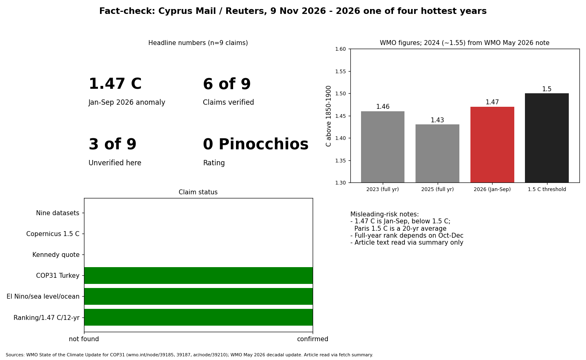

Core claims match WMO's COP31 update: Jan-Sep 2026 about 1.47 C above 1850-1900, 2026 one of the four warmest years, a strong El Nino, record sea level, record ocean heat trend. Not verified: the John Kennedy quote, the Copernicus "all but certain to exceed 1.5 C" claim, and the "nine data sets" count; none appear on WMO pages. COP31 location (Antalya, Turkiye) confirmed; exact 9-20 Nov dates not found. I could only read the article through a fetch summary, not verbatim.
| Claim | Status |
|---|---|
| 2026 one of four hottest years | Confirmed (WMO) |
| Jan-Sep 1.47 C | Confirmed |
| Strong El Nino, could raise the figure | Confirmed |
| Past 12 years among warmest | Confirmed |
| Record sea level / ocean heat | Confirmed |
| COP31 in Turkey | Confirmed (dates unverified) |
| Nine datasets | Not checkable here |
| Kennedy quote | Not checkable here |
| Copernicus 1.5 C | Not checkable here |
Confidence: high on WMO-sourced facts, low on the three unverified claims.